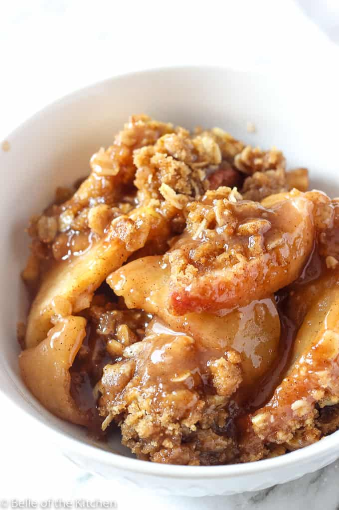

Apple Crisp

Description
A quintessential fall dish! Go apple picking and then make this quick, easy dessert. The original creator of this recipe is Belle of the Kitchen and the link can be found
here.
Ingredients
Produce
- 5 cups fresh sliced apples
Baking + Spices
- 1/2 cup granulated sugar
- 1/2 tsp cinnamon
- 1 tsp vanilla
- 1/2 cup all purpose flour
- 1/3 cup old fashioned oats
- 2/3 cup brown sugar, packed
- 1/4 tsp salt
- 1/2 tsp cinnamon, topping
Dairy
Steps
- Preheat oven to 350 degrees. Grease a deep dish pie plate or large baking dish with butter or cooking spray and set aside.
- Combine the sliced apples with the sugar, cinnamon, and vanilla extract in a large bowl and mix until all of the apples are evenly coated. Pour into the prepared baking dish.
- In a separate medium size bowl, combine the flour, oats, brown sugar, salt, and cinnamon. Pour in the melted butter and stir until well coated and crumbly. Sprinkle the crumb mixture evenly over the top of the apples.
- Bake in the preheated oven for 45-60 minutes until fruit is soft and the topping is golden brown. Allow to cool slightly before serving. Serve warm with vanilla ice cream on top. Enjoy!